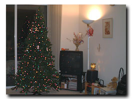
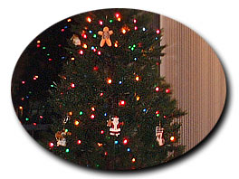

| ..*..*.. 2003年12月23日(火曜日) 晴れ ..*..*..  今年は初めてクリスマスツリーを買いました。 と言ってもこれは生のもみの木ではありません。プラスチックのツリー(Artifitial Christmas Tree)です。７フィート(約2メートル)あります。3つに取り外しができるので、シーズンが終わったら、かなり小さくしまっておくことができ、来年も使えます。  これだけ大きいと、飾りを集めるのもたいへんなので、最初からライト(multiple color light)が550個ついているものにしました。飾りが増えてきたら、ライトをはずすこともできます。 飾りは、毎年、いいものを少しずつ増やしていきたいと思っています。今は10個くらいしかありません。左の写真は飾りが4つほど写ってるんだけど、見えるかな？ こっちではお正月は特に祝わないので、12月25日を過ぎたらすぐに取り外す必要もなく、通常1月の2週めくらいまでは飾っておきます。ので、1年のうち、1か月は出しておくことになりますね。 ところで、クリスマスツリーに、綿をつけて雪をイメージすることって、日本でよくやりますよね。あれって、日本だけの習慣なのなのですって。 さて、12月の初めに買ってきたクリスマスカクタス。ピンクの方はきれいに咲きました。今もつぼみが大きくなっていて、どんどん咲いています。が、、、赤い方は、とうとう、つぼみが全部落ちました。まったく同じように置いていたはずなのに、この違い。でも、ピンクの方だけでもきれいに咲いてよかったです。 |